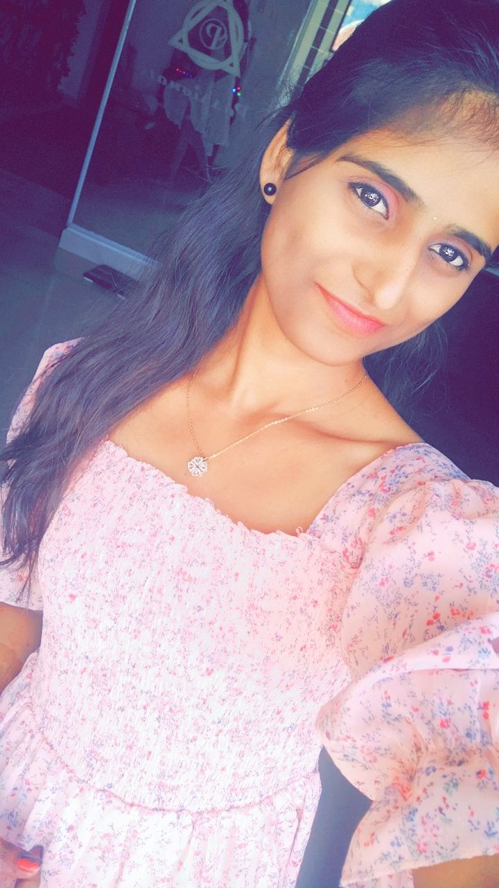
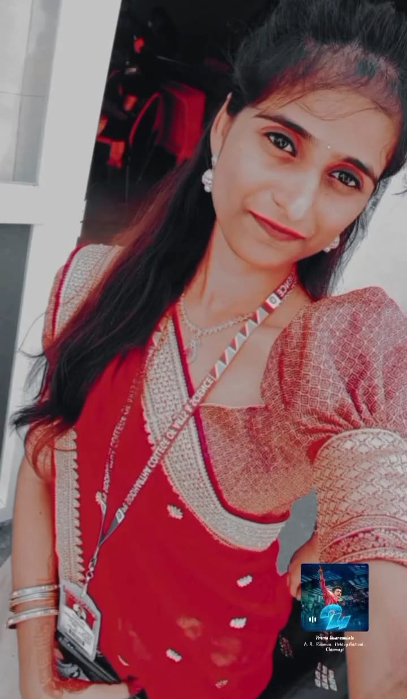
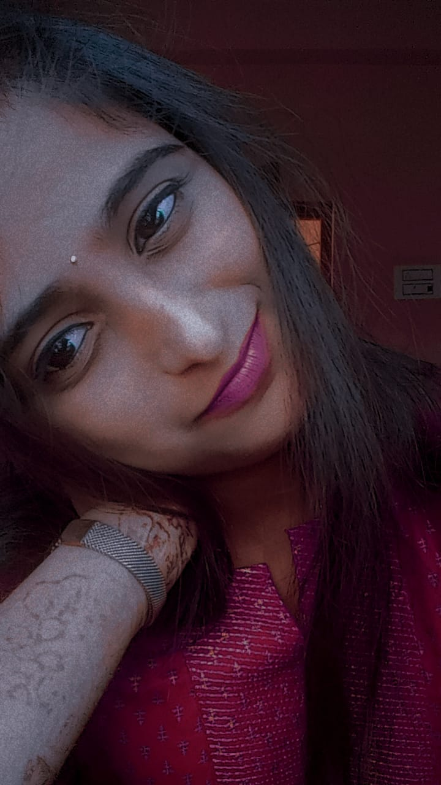

I am currently pursuing my final year of BCA. My goal is to become a Software Developer, and I am very passionate about software technologies. I have started my journey to learn Java Full Stack development. I have completed my HTML course and developed an application using all the tags to strengthen my fundamentals. I pushed this project to GitHub, and I am now learning CSS while continuing Java in parallel.
My main goal is to become a professional Software Developer and contribute to building real-world applications. I want to master Java Full Stack development and continuously improve my skills in frontend and backend technologies.
My debut into software development started with completing an HTML course. I created a project that used all the tags and uploaded it to GitHub. This gave me confidence to move ahead with CSS and Java.
I studied my 10th in St. Antony's E.M. High School, where I secured 98%. Later, I completed my intermediate in Sri Chaitanya Junior Kalasala, Vijayawada, in BIPC, with 93%. Although I was in the science stream, I realized my interest lies in software development, so I shifted my focus. Currently, I am pursuing BCA, and I scored 85% in my recent 4th semester.
I am a quick learner with a passion for acting in addition to technology. I also work as a part-time tutor for school students, balancing both academics and teaching.
Switching from a science background to software development was a big change. Learning coding concepts from scratch and balancing my college, self-study, and tutoring has been challenging. However, my dedication, structured routine, and consistent practice help me overcome these challenges.
  
During weekends, I enjoy time with friends by going to cafes and relaxing. I also find joy in acting and hope to pursue it as a creative passion alongside my career in software development.
Future gallery content can include project screenshots, GitHub contributions, certificates, and acting moments.
My daily routine is well-structured: I go to college at 8 AM and return by 2 PM. After college, I spend one hour learning Java Full Stack and then take some rest. From 5 PM to 8 PM, I conduct tuition classes for school students. Later at night, I dedicate one more hour to learning frontend technologies. On weekends, I relax and enjoy quality time with friends.